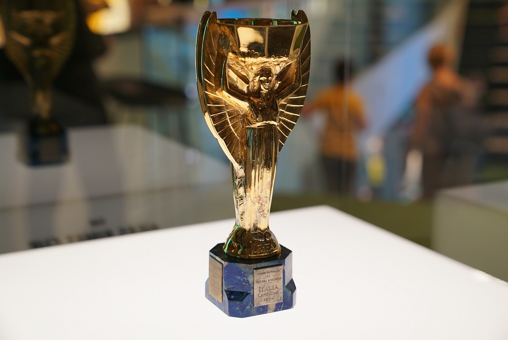
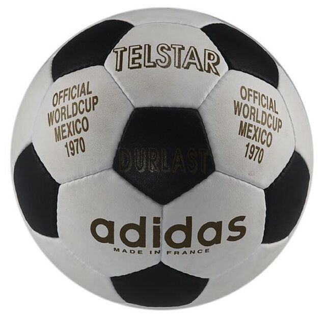

Seleccion Campeona del Mundo
Poster oficial del Mundial de México 1970

Trofeo del Mundial de México 1970
Ultima vez que lo vemos

Album de cromos del Mundial de México 1970

Balon oficial del Mundial de México 1970
